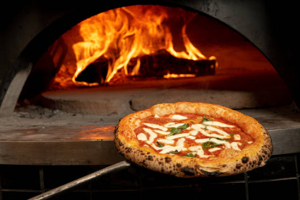
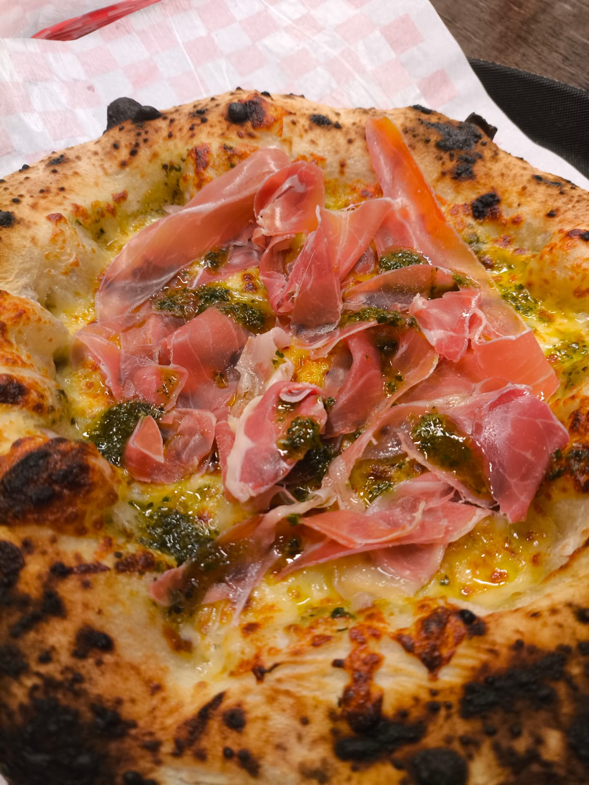
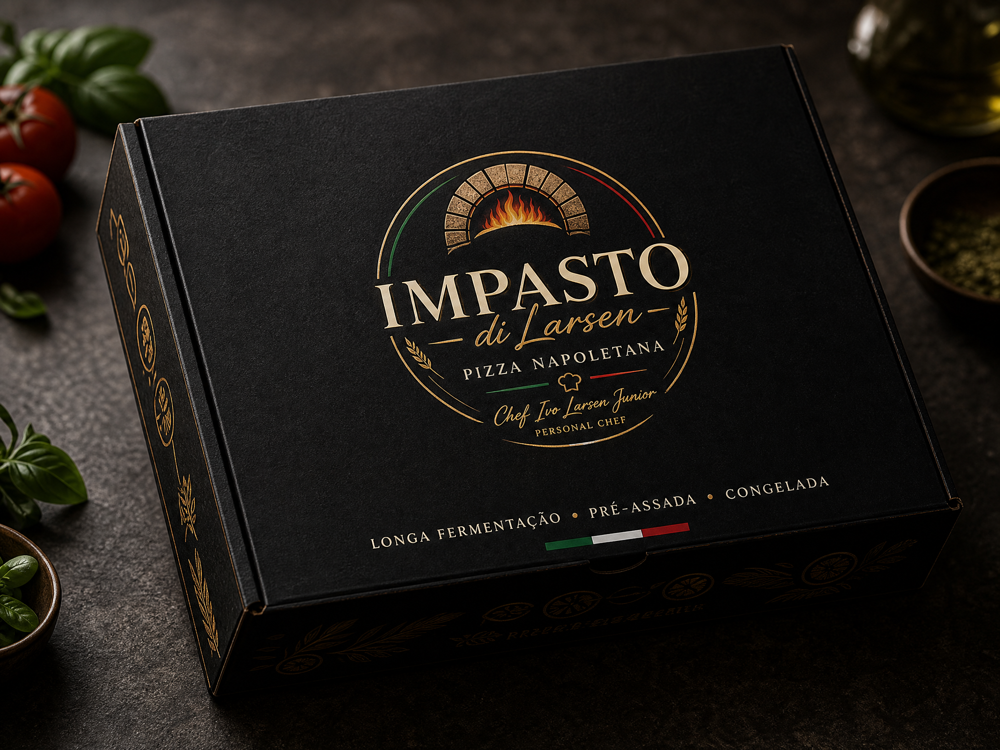
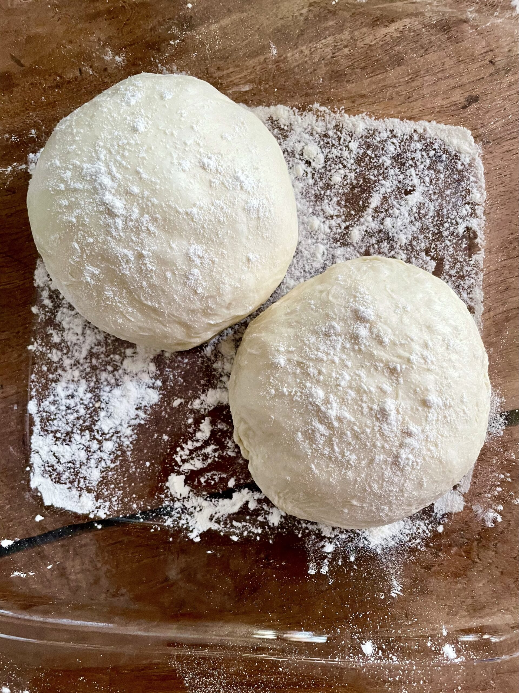

01Experiência presencial
Eventos
Pizza napoletana preparada ao vivo pelo Chef Ivo Larsen Junior, na sua casa, empresa ou celebração.
Levar o forno até você ↗Gastronomia artesanal · Desde Blumenau
Pizza napoletana feita com tempo, técnica e cuidado. Uma experiência para celebrar — ao vivo, no seu evento, ou na sua casa.

A mesma técnica, a mesma massa, a mesma assinatura gastronômica em dois formatos.
Para eventos, o forno chega até você. Para casa, a experiência continua na finalização de uma pizza pré-assada e congelada — feita artesanalmente, esperando pelo seu toque.

01Pizza napoletana preparada ao vivo pelo Chef Ivo Larsen Junior, na sua casa, empresa ou celebração.
Levar o forno até você ↗
02Pizza napoletana artesanal, pré-assada e congelada para transformar qualquer noite em um momento especial.
Conhecer a linha ↗
Impasto significa massa em italiano. E é nela que tudo começa: na fermentação lenta, na textura que se constrói, na borda que nasce do cuidado.
Por trás de cada pizza, existe alguém que escolheu fazer diferente: respeitando o tempo da massa, a origem dos ingredientes e o prazer de compartilhar uma mesa.
Do preparo à finalização, Ivo transforma técnica em acolhimento — e cada evento em uma memória que fica.
Conversar com o chef ↗“Da massa nasce a experiência.
E toda experiência começa à mesa.”
Sim. Levamos as massas já fermentadas, ingredientes, utensílios e a estrutura necessária para abrir, montar e assar as pizzas no local.
Sim. Cada pizza tem aproximadamente 25 cm, um tamanho ideal para que cada convidado escolha seus sabores e experimente diferentes combinações. O convidado pode comer mais que uma pizza se assim desejar.
Atendemos Blumenau, Pomerode, Indaial, Timbó, Gaspar, Ilhota, Navegantes, Penha e Piçarras. Envie o local do evento para verificarmos a disponibilidade e possíveis condições de deslocamento.
Claro. Montamos o cardápio junto com você, considerando o perfil dos convidados e opções variadas para agradar diferentes gostos.
Quanto antes, melhor — especialmente para finais de semana e datas comemorativas. Fale com a gente para consultar a agenda da sua data.
Conte um pouco sobre o seu evento ou peça informações sobre as pizzas congeladas.